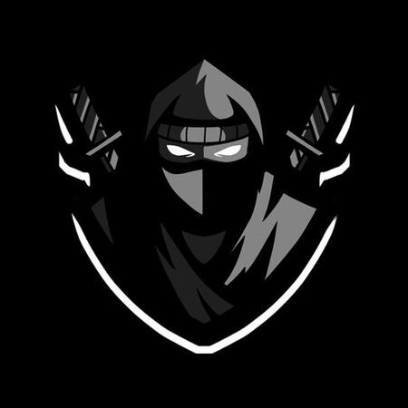

¿Que es un Script?
Un script en Roblox es un conjunto de instrucciones que le dicen al juego qué hacer en momentos específicos. Gracias a los scripts, los objetos y personajes pueden reaccionar a las acciones de los jugadores, como abrir puertas, mover plataformas o mostrar mensajes. Son la "magia" detrás de la interactividad y la dinámica en los juegos de Roblox.

Delta Executor
Un Delta Executor es una herramienta que permite ejecutar scripts personalizados dentro de un juego de Roblox, incluso si esos scripts no están permitidos por el juego original. Básicamente, es un "motor" que permite modificar el comportamiento del juego, como desbloquear contenido o cambiar las reglas, lo que se usa principalmente para hacer trampas o modificar el juego de formas no autorizadas.
